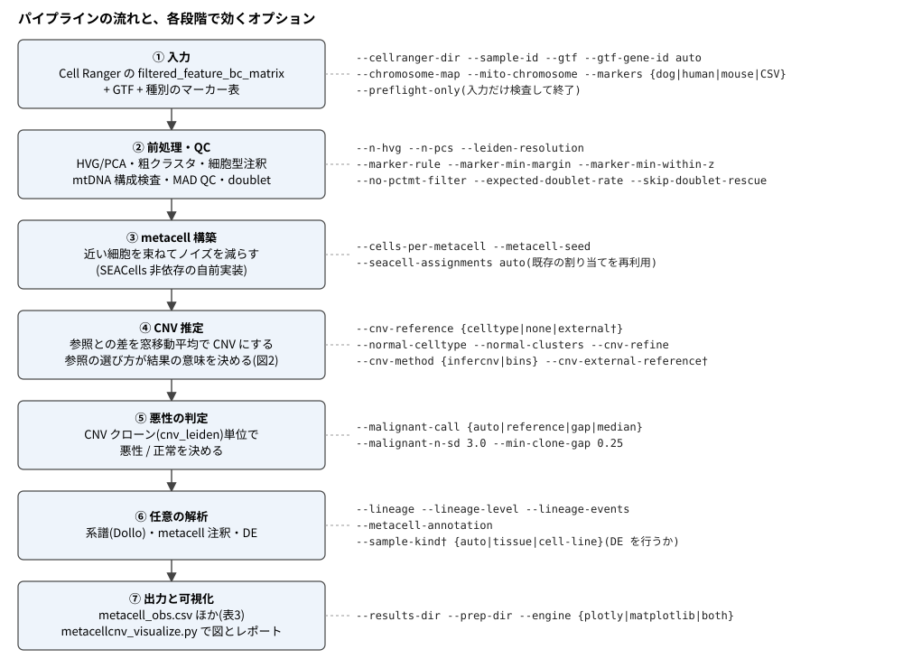
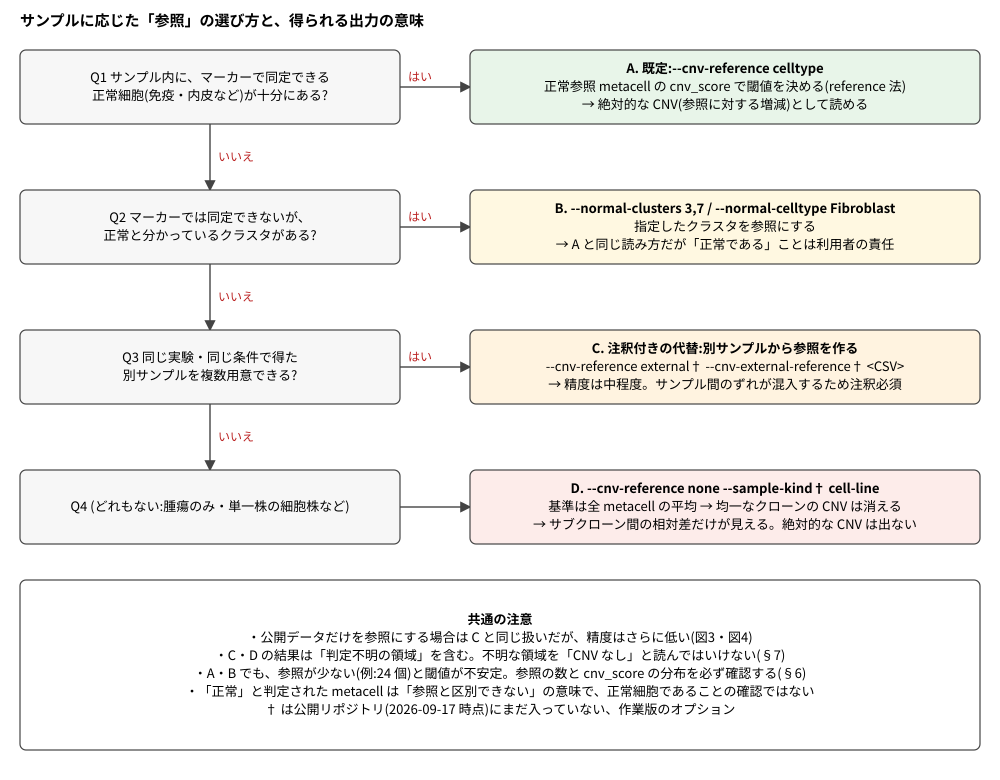
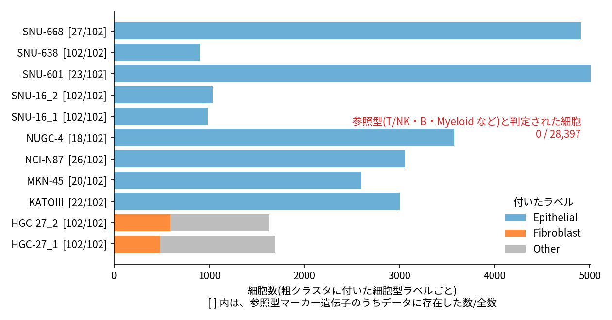
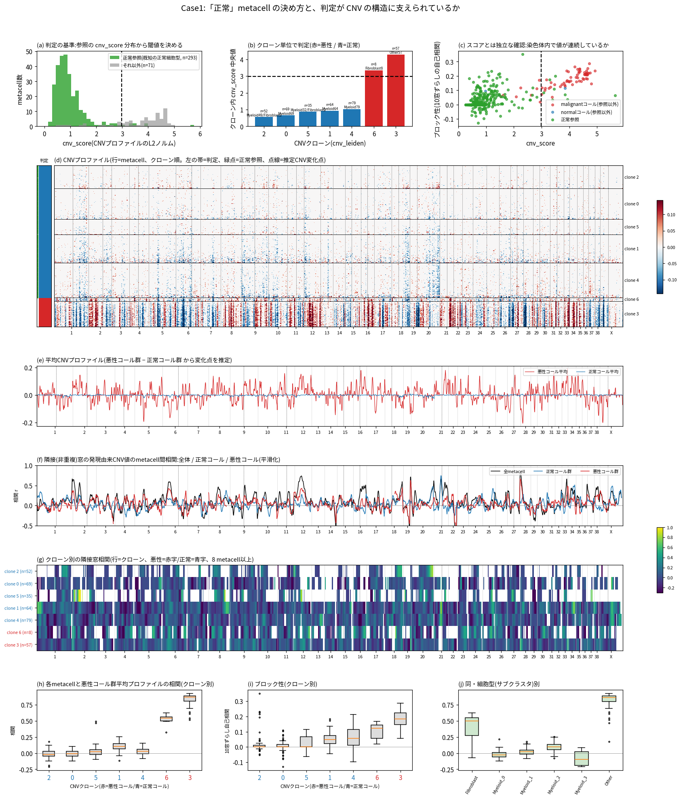
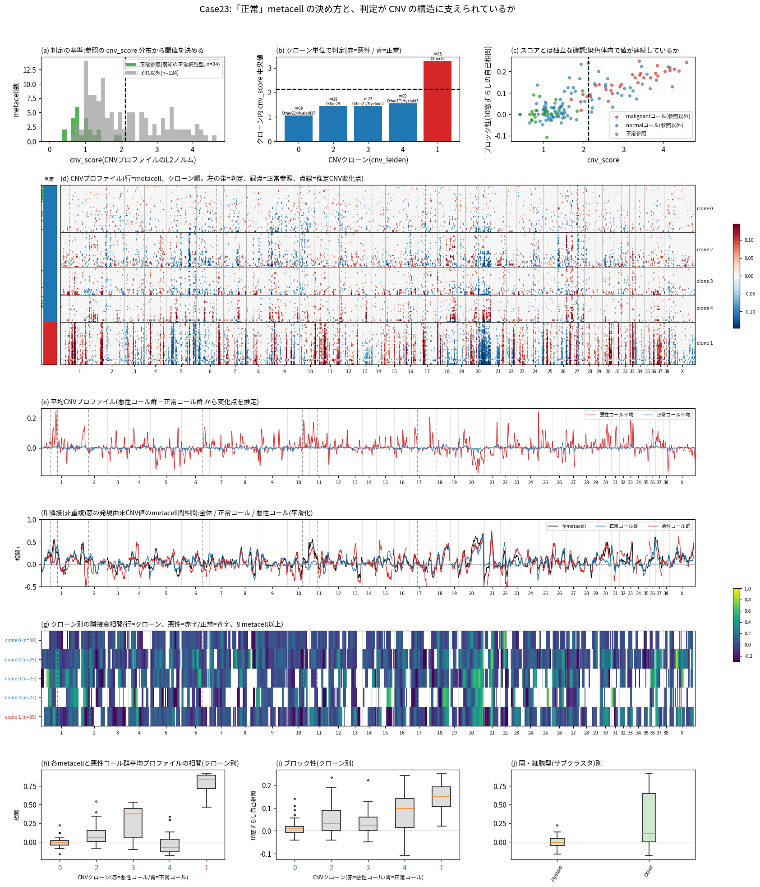
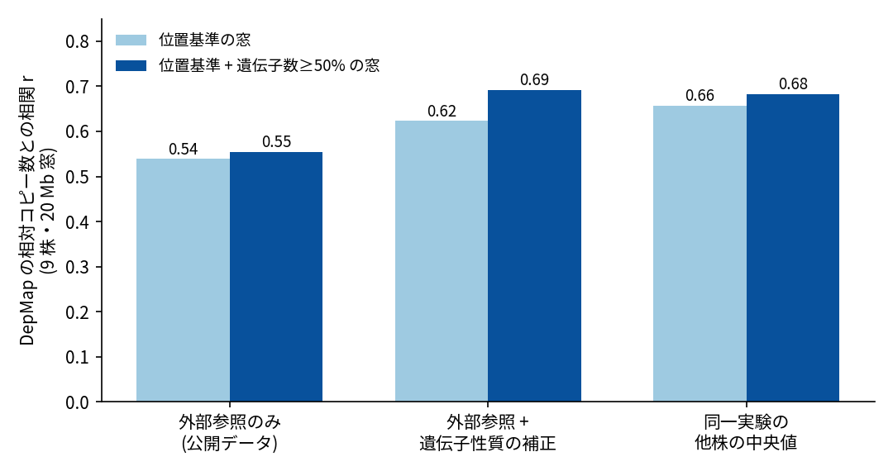
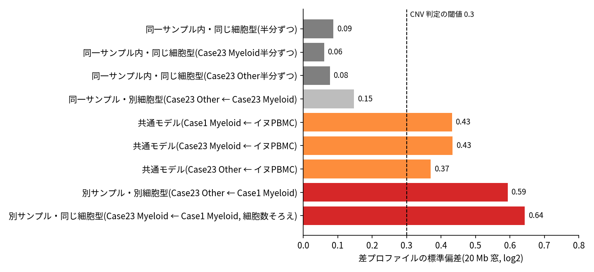

Cell Ranger の出力から出発して、どのオプションでどう走らせると、どんな意味の出力が得られるか。
このガイドは、処理と校正が多段階になったパイプラインを「入力 → 選択 → 出力の意味」の順に整理したものです。 先に結論だけ知りたい場合は、§3(参照の選び方)と§8(結果を読むときのチェックリスト)を読んでください。
English version: index.en.html / pipeline_guide.en.md
metacellcnv.py(2026-09-29 時点)。オプション名・既定値は --help と実コードで確認しています。--sample-kind、--cnv-reference external、--cnv-external-reference と、外部参照を作る build_external_cnv_reference.py です。
{a|b} は選択肢、†は作業版のみ。
④の「参照」の選び方が、出力の意味をもっとも大きく変える(図2、§3)。パイプラインの考え方は次の通りです。
cnv_score)でクローン(cnv_leiden)を悪性 / 正常に分ける。つまり、参照が何であるかが、そのまま「CNV とは何に対する増減か」を決めます。
| 入力 | 指定するオプション | 要点 |
|---|---|---|
| Cell Ranger 出力 | --cellranger-dir |
filtered_feature_bc_matrix/(matrix.mtx、barcodes.tsv、features.tsv または genes.tsv。gzip の有無は問わない)。複数指定でき、その場合は --sample-id を同じ数だけ並べる |
| 遺伝子座標 | --gtf、--gtf-gene-id auto |
参照ゲノムと一致する GTF。遺伝子名の属性キーは GENCODE が gene_name、NCBI RefSeq が gene。auto で自動検出 |
| 染色体名の変換 | --chromosome-map |
RefSeq の NC_… を chr1… に直す NCBI assembly report。GENCODE(chr1…)なら不要 |
| ミトコンドリア | --mito-chromosome |
mtDNA の配列 ID。既知 ID(chrM、MT、NC_002008.4 など)と GTF からの自動検出が既定で効く。イヌ CanFam6 は NC_002008.4 |
| 細胞型マーカー表 | --markers {dog,human,mouse,CSVのパス} |
既定は dog。実データで検証済みなのは dog の Macrophage / Endothelial / Fibroblast / Epithelial の 4 パネルだけで、それ以外と human・mouse の表は命名の変換のみ(未検証のパネルでラベルを付けると警告が出る) |
実行の前に、入力の食い違いを次のコマンドで検査できます(重い処理は行いません)。
python metacellcnv.py --cellranger-dir <sample>/outs/filtered_feature_bc_matrix \
--gtf genes.gtf --gtf-gene-id auto --markers human --preflight-only
検査するのは、必要ファイルの有無、遺伝子名と GTF の一致率、mtDNA 遺伝子の有無、マーカー遺伝子の有無、染色体名です。
一致率が低いときは --gtf-gene-id の値を疑ってください。

表1. 参照の方式と、出力の意味
| 方式 | 主なオプション | CNV の意味 | 失われるもの / 注意 |
|---|---|---|---|
| A. サンプル内の正常細胞を参照(既定) | --cnv-reference celltype |
正常参照に対する増減(絶対的な CNV) | 参照が少ないと閾値が不安定(§6) |
| B. 正常と分かっているクラスタを指定 | --normal-clusters 3,7、--normal-celltype Fibroblast |
A と同じ | 指定したクラスタが本当に正常かは利用者の責任。Fibroblast / Epithelial は腫瘍そのものになりうるため、既定では参照にしない |
| C. 別サンプルを参照(†) | --cnv-reference external --cnv-external-reference <CSV> |
別サンプルに対する増減。サンプル間のずれが混入する | 精度は中程度(§7)。結果には必ず注釈を付ける |
| D. 全 metacell の平均を参照 | --cnv-reference none(単一株は --sample-kind cell-line†) |
サブクローン間の相対差だけ | 均一なクローン全体の CNV は基準と同じ値になり、消える |
補足として、次の四点を押さえてください。
--cnv-reference celltype(既定)で走らせると、「正常参照が確保できません」で実行が止まります。腫瘍だけのサンプルでは --cnv-reference none を明示してください(止まるときのメッセージには、--normal-clusters、--normal-celltype、--cnv-refine も案内されます。--cnv-refine は 1 パス目で CNV が平坦だったクローンを参照にし直す方式で、均一な腫瘍には平坦なクローンがないため使えません)。unassigned になります。--cnv-reference none で実行したところ、11 metacell が悪性 4 個・正常 7 個に分かれました。クローン中央値の差は 0.065 しかなく、cnv_score の範囲は両群で重なっていました(0.70〜1.30 と 0.88〜1.34)。INTERPRETATION_CAVEATS.txt の総合判定も「重大な問題は検出されていません」と出ます。putative_malignant は、腫瘍と正常の区別ではありません。cnv_score による内部の二分に過ぎず、DE に使ってはいけません。--sample-kind auto(†、既定)は、参照 metacell が 3 個未満なら単一株相当とみなして DE をスキップします。CNV の判定自体はスキップされません。最小限の流れは「検査 → 本体 → 可視化」の三段です。以下の <…> は自分の環境に置き換えてください。
表2. 状況別の実行例
| 状況 | コマンド(要点のみ) |
|---|---|
| イヌの腫瘍組織(免疫細胞などの正常細胞を含む) | python metacellcnv.py --cellranger-dir <dir> --gtf <refseq.gtf> --gtf-gene-id gene --chromosome-map <assembly_report.txt> --mito-chromosome NC_002008.4 --markers dog --out-dir results/<sample> |
| ヒトの細胞株(腫瘍のみ・単一株) | python metacellcnv.py --cellranger-dir <dir> --gtf gencode.v50.annotation.gtf --gtf-gene-id auto --markers human --cnv-reference none --out-dir results/<sample> |
| 参照だけを替えて再解析(metacell は再利用) | 上のコマンドに --seacell-assignments results/<sample>/cell_to_metacell.csv と、別の --cnv-reference を付けて別の --out-dir に出す |
| 別サンプルを参照にする(†) | 先に python build_external_cnv_reference.py --cellranger-dir <参照1> --cellranger-dir <参照2> --out ref.csv で擬似バルク参照を作り、本体に --cnv-reference external --cnv-external-reference ref.csv を付ける |
| 系譜も出す | 本体に --lineage(欠失事象のみを使う。既定 --lineage-events loss) |
| 図とレポート | python metacellcnv.py --visualize --results-dir results/<sample> [--prep-dir prep/<sample>] |
実行の前後で、次の習慣を勧めます。
--seacell-assignments)。metacell の構成が揃うので、差が参照の違いだけになります。INTERPRETATION_CAVEATS.txt と malignant_call.txt は実行ごとに内容が変わります。malignant_call.txt に出る閾値と参照の cnv_score の分布(図6、図7の(a))を見てから結論を書く。表3. 出力ファイル(--out-dir 直下)
| ファイル | 内容 | 読み方の要点 |
|---|---|---|
metacell_obs.csv |
metacell ごとの表 | 下の表4を参照 |
malignant_call.txt |
悪性判定の方法と根拠を 1 行で | 方法(reference 法 / gap 法)と閾値が書かれる |
INTERPRETATION_CAVEATS.txt |
この実行に固有の注意 | 必読。複数検体を並べるときは各検体のものを読み比べる |
cnv_metacells.h5ad |
metacell × 窓の CNV 行列 | obsm['X_cnv'] に CNV(スパース。動的閾値で小さい値は 0)、uns['cnv']['chr_pos'] に染色体ごとの窓の開始位置 |
clone_chromosome_profiles.csv |
クローン × 染色体の平均 CNV | 図のヒートマップの元表。--cnv-refine を付けた場合は _refined 版も出る |
cell_to_metacell.csv |
バーコード → metacell の対応 | 再利用(--seacell-assignments)にも使う |
metacells.h5ad、singlecells_qc.h5ad |
metacell 集約後 / QC 後の単一細胞データ | 後者は大きい |
qc_metrics.csv、metacell_metrics.csv、metacell_mito_qc.csv、mito_gene_profile.csv |
QC と mtDNA の検査結果 | mtDNA 構成が不自然な検体は --no-pctmt-filter を検討 |
de_malignant_vs_normal.csv |
悪性 vs 正常の DE | 単一検体の metacell は擬似反復で、p 値は推論に使えない。群が CNV で決まるため循環性もある |
cnv_lineage.nwk、cnv_lineage_branches.csv、cnv_lineage_events.csv、cnv_lineage_report.json |
系譜(--lineage 時のみ) |
has_structure が偽なら、木を系譜として読んではいけない |
environment.lock.txt |
実行環境の記録 | 再現のために保管 |
表4. metacell_obs.csv の主な列
| 列 | 意味 |
|---|---|
n_cells、sample_id |
metacell を作る細胞数、由来サンプル |
cell_type |
マーカーによる細胞型。Myeloid_0 のように粗クラスタ番号が付く。参照かどうかの判定に使われる |
cnv_score |
CNV プロファイルの L2 ノルム。大きいほど参照からのずれが大きい |
cnv_leiden |
CNV で分けたクローン。悪性 / 正常の判定はこの単位 |
putative_malignant |
malignant / normal / unassigned。normal は「参照と区別できない」の意味。参照なしの実行(gap 法)では、腫瘍と正常の区別ではなく cnv_score の内部の二分 |
mito_*、ratio_outlier ほか |
mtDNA 由来の品質フラグ |
参照は、マーカー遺伝子による細胞型注釈で「既知の正常細胞型」と判定されたクラスタの metacell です。
--marker-min-margin、既定 0.02)と、クラスタ内 z(--marker-min-within-z、既定 2.0)がともに閾値を超えたときだけ、その型を付けます。満たさなければ Other です。use_as_normal_reference)なら、その metacell が参照です。--markers dog|human|mouse の表では、T/NK、B、Plasma、Myeloid、Macrophage、Mast、Endothelial、SmoothMuscle、Leukocyte の 9 型が参照に使えます。Fibroblast と Epithelial は入りません(--normal-celltype で追加できます)。同じ参照集合が二か所で使われます。
cnv_score の平均 + 3SD(--malignant-n-sd)。クローン中央値がこれを超えれば悪性。参照は発現マーカーで「正常らしい」と推定した細胞であり、遺伝的に確認された正常細胞ではありません。 骨髄系の腫瘍のように、腫瘍そのものが参照型の細胞に見える場合は、CNV が参照と一緒に打ち消されて見えなくなります。

読み方に注意が要ります。 11 サンプルのうち 6 サンプル(KATOIII、MKN-45、NCI-N87、NUGC-4、SNU-601、SNU-668)は、 公開された特徴量リストが約 1.3〜1.4 万遺伝子に絞られていて、参照型マーカー 102 個のうちデータに存在するのは 18〜27 個だけです(発現のない遺伝子が公開時に除かれたとみられ、免疫細胞のマーカーの多くが含まれていない)。 そのため、参照が 0 個になった結果を「判定規則が腫瘍細胞を参照と誤らなかった」ことの証拠として強く言えるのは、 マーカーが全部そろう残り 5 サンプル(HGC-27 の 2 つ、SNU-16 の 2 つ、SNU-638。計 6,248 細胞・80 metacell)に限られます。 6 サンプルでは、参照型のスコアは数個の遺伝子から計算されるため、参照を検出する力そのものが弱い状態です。
マーカーが全部そろう 5 サンプルでも、粗クラスタ 27 個のうち 2 個(HGC-27 の 363 細胞)は最高スコアが参照型(Macrophage)でしたが、 スコアは ±0.003 でほぼ 0 であり、判定規則(margin と z)で Other に落ちました。
参照が 0 個になったことには、二つの意味があります。
--marker-min-margin を 0 付近まで下げると、上の 363 細胞が Macrophage とされ、腫瘍細胞が参照に入る恐れがあります。

cnv_score 分布と閾値(破線、平均+3SD = 2.98)。(b) クローンごとの中央値。赤が悪性、青が正常。
(c) cnv_score とは独立な「ブロック性」(染色体内で 10 窓ずらした自己相関)との関係。
(d) CNV ヒートマップ(行は metacell をクローン順に並べたもの。左の帯が判定、点線が推定した変化点)。
(e) 悪性コール群と正常コール群の平均プロファイル。(f)(g) 重ならない窓どうしの相関(全体・群別・クローン別)。
(h)(i)(j) 悪性コール群の平均プロファイルとの相関、およびブロック性を、クローン別・細胞型別に示す。Case1 では、悪性コールと正常コールが明確に分かれました。悪性コールのブロック性の中央値は 0.17、正常コールは 0.016 です。 悪性コール群の下位 10% 点(相関 0.55)を超える正常コールは 299 個中 0 個でした。

Case23 では、正常コールの 113 個のうち 18 個が、悪性コール群の平均プロファイルとの相関 0.3 以上でした。 参照が少なく 1 細胞あたりの読み取りも少ない(約 426 遺伝子 / 細胞)ため、閾値付近でクローン単位に切ると、腫瘍細胞を含む混合 metacell や低純度の腫瘍クローンが「正常」に入りえます。
なお、重ならない隣接窓の相関(図6・図7 の (f)(g))は、群の内部では 0.04〜0.1 と低く、変化点をまたぐかどうかの差も一貫しません。 クローン内の metacell が似た状態でばらつきが小さいことが理由と考えています。判定の根拠として使えるのは、ブロック性と腫瘍パターンとの相関のほうです。 変化点は悪性コール群と正常コール群の差から自動推定したもので、実際の境界より粗い(参考扱い)。
サンプル内に参照がない場合(表1 の C・D)に、どこまで CNV を信頼できるかを、正解のわかるデータで測りました。
この節の方針は検証済みですが、パイプラインには未実装です(再現用のスクリプトは作業ディレクトリの _geo_cnv/ にあり、公開リポジトリには含めていません。結果の表は docs/data/ にあります)。
OmicsCNGene(遺伝子ごとの相対コピー数)。log2(コピー数) を正解にし、20 Mb 窓で増幅 > 0.3、欠失 < −0.3 とした。

[実装状況] 1〜5 は未実装です。現行の --cnv-reference external は、複数サンプルを合算した擬似バルク 1 本を参照にする方式で、検証した「他株の中央値」とは異なります。
INTERPRETATION_CAVEATS.txt と malignant_call.txt を読んだか(方法・閾値・参照の数が書いてある)。malignant_call.txt が gap 法なら、putative_malignant を腫瘍 vs 正常と読んでいないか(クローンが 2 個だと必ず二分される)。has_structure が真のときだけ読んでいるか。| 症状 | 原因と対処 |
|---|---|
| 一致率が低い、座標が付かない遺伝子が多い | --gtf-gene-id の値(gene か gene_name)と、features.tsv の遺伝子名の形式を確認する。--preflight-only で再検査 |
| RefSeq のアクセッションが染色体名にならない | --chromosome-map に NCBI assembly report を渡す |
| mtDNA 遺伝子が見つからない警告 | Cell Ranger の参照に mtDNA が含まれていない可能性。pctMT による QC は機能しないので --no-pctmt-filter を付ける |
| 「正常参照が確保できません」で止まる | 参照型の細胞が 1 個もない。腫瘍だけのサンプルなら --cnv-reference none を明示する。正常と分かるクラスタがあれば --normal-clusters で指定する(§3) |
| 参照が少なく DE が出ない | 参照 metacell が 3 個未満だと単一株相当とみなして DE をスキップする(--sample-kind†)。CNV の判定は出力される |
悪性判定が全部 unassigned |
gap 法で明確な二峰性がなく、判定を放棄した。クローンが 1 個のときも同じ。--cells-per-metacell を下げて解像度を上げるか、--normal-clusters で群を指定する |
cnv_metacells.h5ad を anndata 0.11.4 で読むと uns/log1p/base で失敗する |
保存された log1p が null のため。ファイルを複製して h5py で uns/log1p を削除すれば読める |
| メモリ不足(約 4 GB の環境で doublet 検出が OOM になった例) | 細胞数の多いサンプルは、メモリに余裕のある環境で実行する |
表5. docs/ に置いたファイル
| ファイル | 内容 |
|---|---|
pipeline_guide.md、index.html |
本ガイド(日本語)の Markdown 版と HTML 版(同じ内容) |
pipeline_guide.en.md、index.en.html |
英語版の Markdown 版と HTML 版(同じ内容) |
build_html.py |
Markdown から index.html と index.en.html を生成する |
make_diagrams.py |
図1・図2(SVG)を生成する(--lang ja\|en) |
make_figures.py |
docs/data/ の CSV から図3〜5を生成する(--lang ja\|en) |
make_call_figure.py |
cnv_metacells.h5ad と metacell_obs.csv から図6・図7(正常判定の根拠)を生成する(--lang ja\|en) |
data/pos_vs_count.csv |
図3の元表(参照 × 窓の作り方 × 窓幅ごとの相関と AUC) |
data/cross_case2_null.csv |
図4の元表(正常どうしの差の標準偏差) |
data/ref_count_clusters.csv、data/ref_count_samples.csv、data/geo_marker_coverage.csv |
図5の元表(クラスタ・サンプルごとの細胞型ラベルと参照数、サンプルごとの参照型マーカーの存在数) |
img/、img/en/ |
図(日本語版と英語版)。Case1_normal_call.png、Case23_normal_call.png が図6・図7 |
正解データの DepMap(OmicsCNGene.csv、Model.csv)と GEO のデータ(GSE142750)は再配布していません。